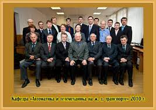

В 2010 году я закончила школу и поступила в ПГУПС на "Электротехнический факультет" (теперь уже факультет "Автоматизация и интеллектуальные технологии") на кафедру "Автоматика и телемеханика на железных дорогах". Раньше я очень любила поезда и железные дороги, поэтому выбрала именно этот университет. Плюс хотела получить инженерную специальность. Пройдя олимпиаду в городе Волхов, я получила направление на факультет "Автоматизация и интеллектуальные технологии", поэтому поступала именно на него, но на базе ПГУПСа существует большой выбор факультетов, таких как:
Кафедра, на которой я училась, "Автоматика и телемеханика на железных дорогах".
Также на данном факультете есть еще кафедры:
Я не жалею, что поступила и закончила именно этот университет. У меня были потрясающие педагоги, которые смогли вложить много знаний, навыков и умений. Да это была очень трудная, сложная, местами не понятная учеба, иногда получалось поспать всего лишь пару часов в день, но это действительно того стоило. Я смогла разобраться во многом, это дисциплинировало меня. Я научилась достигать поставленных целей и решать, как иногда казалось, трудные задачи.
Подробнее о ПГУПСе можно прочитать здесь.